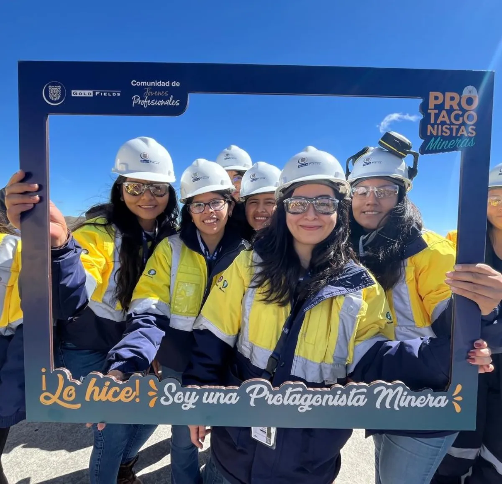

Posicionar la propuesta de valor: un programa responsable, inclusivo y comprometido con el desarrollo del talento femenino.
5ª convocatoria · 2026
Más que una práctica: una experiencia transformadora.
Abre oportunidades reales, construye comunidad y deja huella en la minería del futuro. Así define Gold Fields Perú a Protagonistas Mineras, el programa que impulsa la participación femenina en la industria dando oportunidades profesionales a mujeres recién egresadas de carreras vinculadas a la minería.
El programa
¿Qué es Protagonistas Mineras?
Protagonistas Mineras es el programa de Gold Fields Perú que impulsa la participación femenina en la industria minera, dando oportunidades profesionales a mujeres recién egresadas de carreras vinculadas a la minería. En 2026 llega a su 5ª convocatoria, consolidando un despliegue integral que posiciona esta experiencia profesional única e impulsa una minería más inclusiva.
Evidenciar experiencias reales y testimonios para atraer mujeres egresadas de carreras afines a la minería a nivel nacional, con énfasis en el Área de Influencia Directa (AID).
Generar un esfuerzo integral para multiplicar el alcance del programa mediante aliados estratégicos, voceros y redes sociales.
“Más que una práctica, es una experiencia transformadora que abre oportunidades reales, construye comunidad y deja huella en la minería del futuro.”
Mensaje clave · Campaña Protagonistas Mineras 2026
“Es una oportunidad para sumarte al cambio que venimos realizando para transformar el sector.”
Rol activo en el cambio dentro de la industria
Propuesta de valor del programa
Sororidad
Lo que vivirás
¿Qué sienten las postulantes al sumarse?
Cuatro promesas que sostienen la experiencia de Protagonistas Mineras, tal como las define el plan del programa.
01
Inician su carrera con propósito en una empresa global.
02
Son acompañadas por mentores y mentoras comprometidos con su desarrollo.
03
Pertenecen a una comunidad que impulsa el cambio en la industria.
04
Entran a un entorno donde el respeto, el aprendizaje y el cuidado son parte del día a día.
En la operación
La comunidad, en imágenes.
Protagonistas Mineras en el día a día de la operación: la planta, el campo y la comunidad de jóvenes profesionales que sostiene el programa.



Convocatoria 2026
Cronograma de la 5ª convocatoria.
El despliegue completo de Protagonistas Mineras 2026, de julio a agosto.
01 Jul
Lanzamiento de la campaña: “¿Te imaginas ser parte de PM?”
06–07 Jul
Pre-convocatoria interna para trabajadores de Gold Fields y difusión en el Área de Influencia Directa (AID).
08 Jul
Convocatoria abierta en redes, prensa y aliados de Gold Fields.
09 Jul
Publicación sobre la veracidad del proceso de selección, con consultora.
10 Jul
Video “Cómo postular”, con los pasos del proceso.
14 Jul
Publicación sobre la propuesta de valor del programa y la Comunidad de Jóvenes Profesionales.
16 Jul
Webinar de Gold Fields con los gremios aliados del sector.
16–31 Jul
Testimonios de líderes, practicantes actuales y ex Protagonistas Mineras, y de sus mentores.
03 Ago
Video “El journey del candidato”.
06 Ago
Cierre del proceso de selección.
Las postulaciones abren el 8 de julio de 2026. Sigue los canales oficiales de Gold Fields Perú para no perderte el enlace de postulación en cuanto esté disponible.
Postulación próximamenteRespaldo del sector
Gremios y aliados.
Protagonistas Mineras se apoya en organizaciones que impulsan a la mujer en la industria minera.
- WIM — Women in Mining Perú
- WAAIME Perú
- Student Chapter UPN
- Perú Mujeres Roca
- Amautas Mineros
- Instituto de Ingenieros de Minas del Perú
Súmate
La 5ª convocatoria ya empezó.
Del 1 de julio al 6 de agosto de 2026, Gold Fields Perú despliega Protagonistas Mineras a nivel nacional.
El enlace oficial de postulación se activa el 8 de julio de 2026 en los canales de Gold Fields Perú.